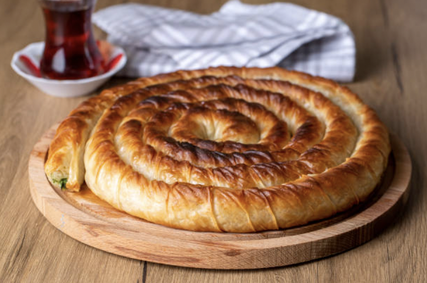

Burek

Meat Burek Recipe
Ingredients:
- 1 pound ground beef
- 1/2 cup onion, finely chopped
- 2 cloves garlic, minced
- 2 tablespoons olive oil
- 1 teaspoon paprika
- 1/2 teaspoon salt
- 1/4 teaspoon black pepper
- 1 package (16 ounces) phyllo dough
- 1/2 cup unsalted butter, melted
Steps:
- In a large skillet, heat the olive oil over medium heat. Add the onions and garlic, and cook until the onions are translucent.
- Add the ground beef to the skillet and cook until browned. Break up the meat with a spoon as it cooks.
- Stir in the paprika, salt, and black pepper. Cook for an additional 2 minutes. Remove from heat and let it cool.
- Preheat the oven to 375°F (190°C).
- Unroll the phyllo dough and cover it with a damp cloth to prevent drying.
- Brush a baking dish with melted butter.
- Place one sheet of phyllo dough in the baking dish and brush it with melted butter. Repeat this step with 5-6 more sheets, layering them on top of each other.
- Spoon the meat mixture evenly over the layered phyllo dough in the baking dish.
- Continue layering the remaining sheets of phyllo dough on top of the meat mixture, brushing each sheet with melted butter.
- Brush the top sheet with melted butter as well.
- Using a sharp knife, score the top layer of the burek into desired portion sizes.
- Bake the burek in the preheated oven for 30-35 minutes, or until the top is golden brown and crispy.
- Remove from the oven and let it cool for a few minutes before serving.